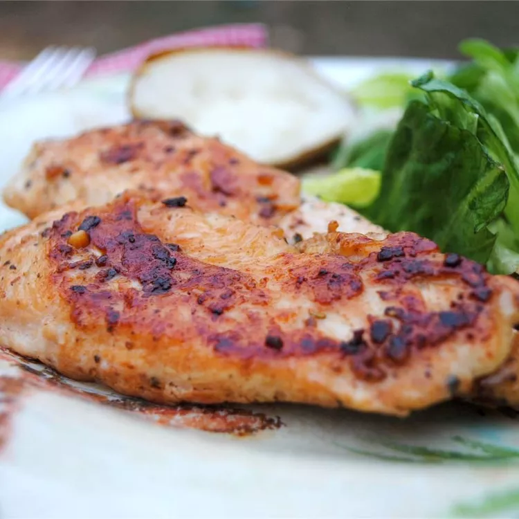

Recetas de Odin
A Good, Easy Garlic Chicken
Description: Five-Ingredient Red Curry Chicken
Sprinkle chicken with garlic powder, onion powder, and seasoning salt — then sauté and enjoy. Couldn't be easier! Great recipe for a quick and easy meal, even for the pickiest eater.

- Prep Time: 10 mins
- Cook Time: 20 mins
- Total Time: 30 mins
- Servings: 4
Ingredients
- 3 tablespoons butter
- 4 skinless, boneless chicken breast halves
- 2 teaspoons garlic powder
- 1 teaspoons seasoning salt
- 1 teaspoons onion powder
Directions
- Step 1: Gather all ingredients.
- Step 2: Melt butter in a large skillet over medium-high heat. Add chicken and sprinkle with garlic powder, seasoning salt, and onion powder.
- Step 3: Sauté until chicken is cooked through and juices run clear, 10 to 15 minutes on each side.
- Step 4: Serve hot and enjoy!
Nutrition Facts
- 214 Calories
- 10g Fat
- 2g Carbs
- 28g Protein
Home